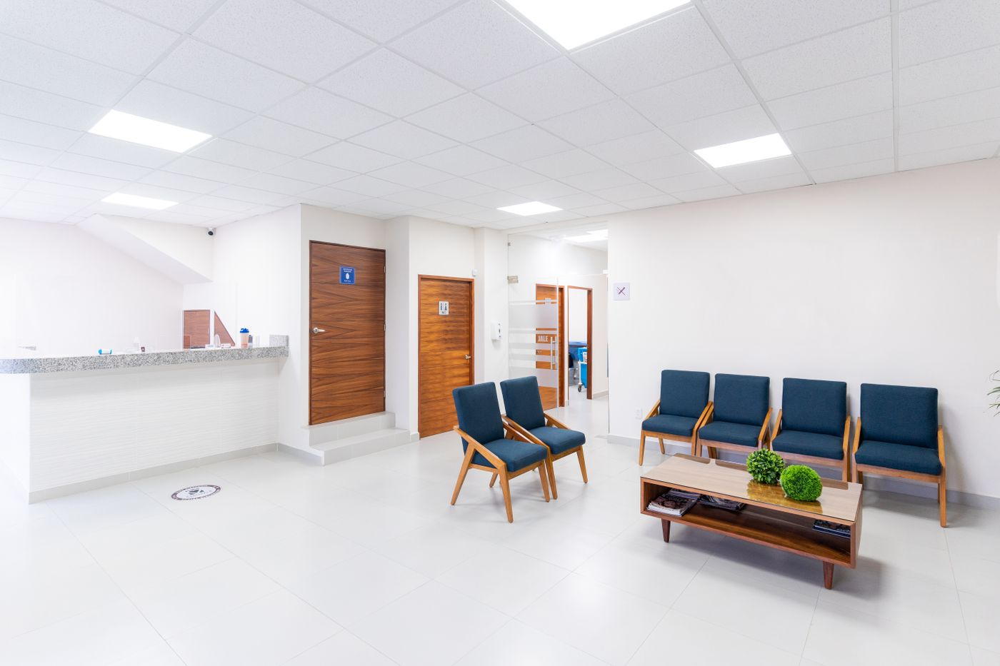

Day One
Journey Tree
Healthcare
Transport
Driving
Campus

EVERYDAY GUIDES
Health Care Journey
Your first GP visit
From finding care to follow-up.
Before
During
After
All 6 steps
At your own pace
Photo credits
↑
↓
02 / 06
Find a GP